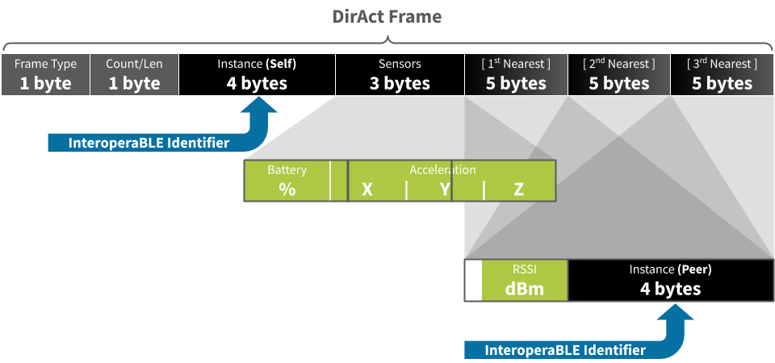

DirAct
Proximity interaction detection software for Bluetooth beacons

The TL;DR (Too Long; Didn't Read)
Learn how DirAct detects real-time proximity interactions, and why.
- Why interactions?
- In many use cases, knowing who is interacting with who (or what) is superior to knowing where exactly they are.
- Why beacons?
- Bluetooth beacons are cost-effective radio transceivers. Many third-party beacons can be programmed with DirAct.
- Any infrastructure?
- Yes, one or more Bluetooth receivers must be in range (~10m) to decode and process the DirAct transmissions.
How DirAct works
DirAct observes what's in proximity and advertises this data for any device in range to interpret
DirAct-capable devices
DirAct can run on standard battery-powered beacons and other Bluetooth Low Energy devices
Open source, MIT-licensed versions of the DirAct software written in JavaScript are maintained for Espruino devices, and are available at github.com/reelyactive/diract.
The following tutorials provide step-by-step instructions to program devices with DirAct software:
-

Develop BLE applications with Puck.js
Our step-by-step guide to program the open smart button with DirAct or other software. -

Develop BLE applications with Bangle.js
Our step-by-step guide to program the open smartwatch with DirAct or other software.
DirAct has been successfully ported to mass-produced beacons, such as the Minew E8, based on the same popular nRF52 chipset used by Espruino devices.
Getting the physics off our chest
Never (p)underestimate the importance of location, location, location!
Anyone who has attempted precise ranging or real-time location using only the signal strength of Bluetooth (or other 2.4GHz signals) should question the effectiveness of this approach. That is because 2.4GHz signals are attenuated by water, which makes up over half of the human body. In other words:
Depending on where a transceiver is worn on the human body will greatly affect the signal strength of packets transmitted to, or received from, devices in proximity.
DirAct (which is derived from Directed interAction) takes advantage of the attenuating effect of the human body when it is implemented as a chest-worn badge. In this case, face-to-face interactions are clearly distinguished by relative signal strength alone.
DirAct specification
The implementation of DirAct
The DirAct specification includes a definition of the DirAct frame which resides in the payload of a BLE advertising packet. Observing the DirAct frame specification ensures that any device which receives such a packet may correctly interpret its semantics.
DirAct frame structure
The DirAct frame is structured as follows. Each of the nearest elements is optional, meaning that the frame length may be 9, 14, 19 or 24 bytes depending on the number of compatible devices detected in proximity.
Where to next?
Learn more about the proximity interaction use case and dive into the code.
-
Proximity Interaction Detection Use Case
Learn more about this and other use cases of Pareto Anywhere open source software by reelyActive. -
Browse the code on GitHub
Explore the open source implementations of DirAct for Espruino devices.